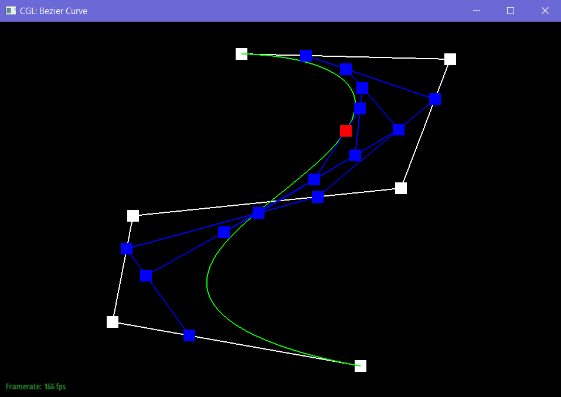

Overview
Give a high-level overview of what you implemented in this project. Think about what you've built as a whole. Share your thoughts on what interesting things you've learned from completing the project.
In this assignment, we implemented image smoothing. In section 1, we used de Casteljau’s algorithm to interpolate a single point out of many control points. This is used in Bezier curves and surfaces. We learned that although Bezier curves are incredibly practical and used in many applications, the computation of them is quite simple.
We found it interesting to see how a bezier curve is actually generated. We had seen images before, and had used control points in Illustrator to create curves, so getting to actually code the path used in graphic design and art was cool.
My main takeaway was that the entire bezier curve is generated by just varying the t parameter from 0 to 1, to gradually go from the first point to the last point.
In section 2, we worked with triangle meshes and the half-edge data structure. Half-edges are nice because we can work with local/neighboring areas of a vertex/edge without having to loop through the entire mesh. We also learned how to traverse a mesh, and how to manipulate meshes.
We implemented edge flips and edge splits to change the inner structure of a mesh. We then up-samples the mesh by performing a sequence of splits and flips. Up-sampling increases the quality of a mesh as each triangle is broken into multiple smaller triangles. This results in smoother surfaces, where curves can be more gradual than before.
Section I: Bezier Curves and Surfaces
Part 1: Bezier curves with 1D de Casteljau subdivision
De Casteljau's algorithm is a recursive algorithm that uses linear interpolation to eventually draw a smooth curve based on a set of given control points. What we did in this task was simply to evaluate a single step in the algorithm. For each point in the given set of control points, we interpolated between that point and the next point. We put all of these points in a vector to be returned for the next step in the algorithm.
Here is an example of De Casteljau's algorithm with 6 control points.

|

|

|

|

|

|
The final Bezier curve looks like this:

|
Here is the same curve, but with different t values:

|
Here is an example of a slightly different Bezier curve:
|  |

|
Part 2: Bezier surfaces with separable 1D de Casteljau subdivision
The evaluateStep function is the same as from part 1, it just has to use 3D vectors instead of 2D vectors because we are moving from 2D curves to 3D surfaces.
However, we extended from just evaluating 1 step, which takes in n control points and returns n-1 control points, to a function that takes in an n*n grid of control points, and returns a single interpolated point.
To do this, we had a helper function to evaluate a single list of n control_points into a single interpolated point. This just requires looping over these points 1 step at a time, to reduce the number of control points by 1 each time. After n-1 loops, we are left with 1 control point, which is the interpolated point.
Now that we can evaluate a single list of n control_points, to evaluate a grid of n*n control points, we just have to loop through each column of the grid, and evaluate each list of n points into a single point. This gives a new list of n points, which can again be evaluated into a single point. This resulting point is the interpolated point over the entire grid.
Here is our teapot:
|
|
Section II: Sampling
Part 3: Average normals for half-edge meshes
For this part, we had to implement area-weighted vertex normals. To calculate this for a given vertex, we looped through all of its outgoing half-edges. Each of these half-edges are part of a different face. For each face, we got 2 of the vectors, originating at the current vertex. The cross product of these 2 vectors gives a new vector that is perpendicular/normal to the face, and the magnitude of this cross-product, is the area of the parallelogram formed by the 2 vectors — aka 2 times the area of the face. With this fact, it was easy to calculate all the area-weighted normals for all the faces. Then we just had to sum them up, and normalize the resulting vector by dividing by its L2-norm.
Here is our teapot with and without Phong shading:
|
|

|
Part 4: Half-edge flip
The first step in implementing our edge flip operation was saving all of the old edges, vertices, halfedges, and faces. After that, we drew out a detailed diagram of every single variable for the edge pre-flip and post-flip. We then went through and changed the pointers for each edge, face, vertex, and halfedge. For halfedges, we used the setNeighbors function.
Here are the diagrams we used to code out this function:
|
|

|
Here is a mesh before and after some flips:

|

|
Debugging:
We thought our implementation worked, but found out later that we messed up a single pointer when our 6 didn’t work :(. We went through it several times and didn’t find the issue. At this point, we added every single element in the mesh to our code. We tried to run the code several times, and observed different vertices and their attributes. We found that some vertices were saying that they had more neighbors than they actually had. Finally, we got it by saying each individual variable out loud and following the diagram. Turns out that we had misassigned the halfedge of a vertex, which lines up with the observations we made about the number of neighbors of a vertex.
Part 5: Half-edge split
We followed the same steps as Part 4 – we drew a diagram, and used the same original variables that we used in Part 5. This helped us a lot, since we did not need to go back and re-save all of the variables in the mesh. After this, we had to make new elements in the mesh, which we did not have to do in Part 4. Again, we changed the pointers for every edge, face, vertex, and halfedge.
Here are the diagrams we used to code out this function:
|
|

|
Later, when we did Part 6, we realized that we needed to differentiate between old and new edges, as well as old and new vertices. In order to account for this, we created attributes isNew and isNew2 for edges, and isNew for vertices. isNew represents whether or not that edge is new and NOT split from the original edge. In other words, only nea and nec should be labeled isNew in our diagram. isNew2 represents which edges are new in general. So, in our diagram, nea, neb, and nec are labeled isNew2. We also labeled our new vertex, nv, as new. We set these attributes in this part so that they are set when we create new edges and vertices from a split.
Here is a mesh before and after some flips and splits:
|
|

|
Debugging:
Again, we did not realize there was a bug in this part until Part 6. One silly thing is that we named one of the old edges hea, and one of the new edges nea. It’s very hard to differentiate between hea and nea with our handwriting, so we mixed those up when we were actually coding it.
Part 6: Loop subdivision for mesh upsampling
We followed the 5 steps outlined in the given code. First, we computed new positions for every vertex from the input mesh. We did this using the formula:
(1.0 - num_neighbors*u)*old_position + u*sum_neighbors; where u is 3/16 if num_neighbors is 3, and u is 3/(8*num_neighbors) otherwise.
Then, for every edge, we computed the newPosition for the new vertex that will be created when we split the edge later on. We know that every edge will have a single new vertex at its midpoint, so there is a 1:1 correspondence, so we can store these new vertex positions inside the edge for now (since the vertex doesn’t exist yet).
Next, we split every single edge in the mesh. We have to be careful, though, because calling splitEdge creates new edges, so this could cause an infinite loop. To get over this, we used the isNew variable to track which edges are new and which are old. When we call splitEdge, a new vertex is returned (the vertex at the midpoint of this edge). We copy over edge->newPosition to the new vertex’s newPosition, so we have easy access to it in the future.
Next, we flipped every new edge that connects an old and new vertex.
Finally, we copied all the vertices’ newPositions into their position variables to update their actual position. We have to do this at the very end because all calculations depend on the oldPositions, so overwriting them would cause complications.
Debugging:
Debugging this part was painstakingly hard. We kept getting strange unexpected shapes and weren’t sure where the problem came from. The debugging trick that helped us was to first visually pinpoint a vertex that had an unexpected position (corner vertices had dimples). We then noted its true position, and in our code, printed out some values corresponding to that vertex. We noticed the corner vertex of a cube thought it had 6 neighboring vertices instead of 5, meaning our pointer manipulation from q4 and q5 must have been off. So we revisited those questions, checked every single pointer, and found a couple minor bugs. After fixing those, the printed values were as expected, and the mesh looked good!
Here is a cube with loop subdivision:

|

|
|
|

|

|

|
Load dae/cube.dae. Perform several iterations of loop subdivision on the cube. Notice that the cube becomes slightly asymmetric after repeated subdivisions. Can you pre-process the cube with edge flips and splits so that the cube subdivides symmetrically? Document these effects and explain why they occur. Also explain how your pre-processing helps alleviate the effects.
The reason the cube is asymmetrical is because each face in the start has only one diagonal edge. When we split and flip edges, the fact that each face only has one diagonal causes slight asymmetry, and since each iteration depends on the new edges and vertices of the previous iteration, this asymmetry will propagate onwards to all iterations. We can alleviate this by having each face start out with two diagonals, which would make each face symmetrical from the start.
Here is an example of another mesh with loop subdivision:

|
|
|

|
Take some notes, as well as some screenshots, of your observations on how meshes behave after loop subdivision. What happens to sharp corners and edges? Can you reduce this effect by pre-splitting some edges?
Sharp corners and edges get pushed inwards because their new position depends on the positions of all neighbors. Corners are the furthest out point, so its neighbors will always be further in, meaning the new position will always be further in. This is most apparent in a cube.
We can reduce this effect by pre-splitting images. If we look at weird.dae in comparison to the cube, we can see that weird still has sharper corners and edges. This is because the mesh is much more complex than the cube is, and when computing the neighbors, there will be more neighbors closer to the edge. Pre-splitting edges near sharp corners will provide more neighbors to vertices that are on or near corners, which will make loop subdivision more accurately represent the original mesh. We can see this in comparing weird.dae and cube.dae. Because weird has a much more complex mesh, loop subdivision simply smooths the surface, and we can recognize its shape even after several iterations of subdivision. However, the cube starts with a very simple mesh. We can see that for the first few iterations, the entire shape of the cube drastically changes. By the end, we cannot really tell that it was a cube in the beginning.